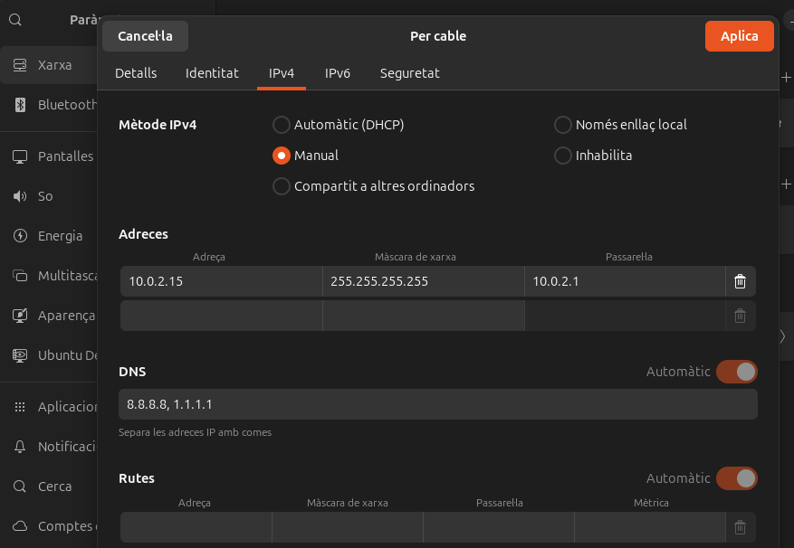
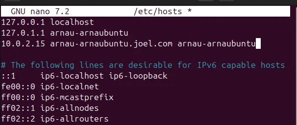
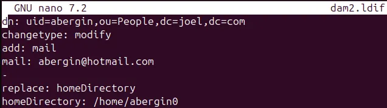
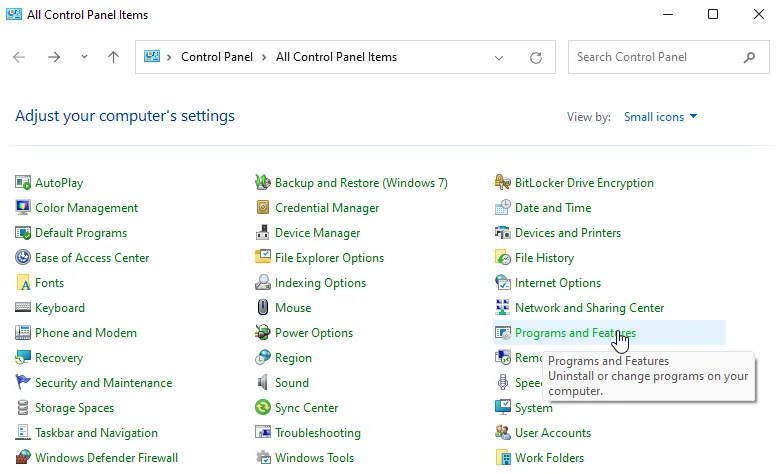

Sprint 3
INSTAL·LACIÓ DEL DOMINI LDAP
Primer canviem el hostname i afegim el nom del domini que estarem utilitzant durant la manipulació del ldap.



Ara, instal·lem els recursos necessaris per utilitzar l’ldap i configurem una contrasenya.


Per fer la base del domini hi ha dos opcions:
- fer-ho a través dels arxius base .ldif
- fer-ho a través d’una comanda (la que utilitzarem nosaltres)

Durant el procés seleccionem gairebé totes les opcions per defecte, ja que per al que volem fer, és més que suficient.


Finalment veiem com amb la comanda slapcat sen’s mostra el nou domini i la seva organització.
2. Unir equips al domini
Crearem una unitat organitzativa, que es un contenidor dins del directori per guardar objectes com: usuaris i grups.

Creem un grup anomenat alumnes per a poder posar els usuaris creats i posem els usuaris que volem afegir a la part inferior.

Ara configurem el fitxer de l’usuari per a poder utilitzar-lo en la maquina client.


-c fa que el ldapadd continuï executant-se encara que es produeixin errors.
-x utilitza autenticació simple en lloc de SASL (Simple Authentication and Security Layer).
-D indica el Distinguished Name (DN) de l'usuari que realitza l'operació, en aquest cas, l'usuari administrador.
-W demana la contrasenya de l'usuari especificat amb -D. Això és més segur que incloure la contrasenya directament a la comanda com passaria amb la -w.
Executem tots els canvis i verifiquem que s’han enregistrat correctament


Un cop a la maquina client
Instal·lem el “nscd”: un dimoni (programa en segon pla) que s’encarrega d’emmagatzemar la memòria cau(cache). Instal·lem també una llibreria que ens permetrà fer la connexió al domini “ldap” des del client amb apt install libnss-ldap.

Fiquem la “ip” del server (amb el format que es mostra a l’imatge: ldap://server_ip) per conectar-nos.

Podem anar seleccionant també les opcions per defecte, que ja en van bé.


Aquí haurem d’indicar el domini personalitzat que hem escollit abans i després introduïr la contrasenya.


Instal·lem apt install libpam-ldap .

Si el client no es pot validar al domini, apart de comprovar els arxius de configuració que es veuran a continuació tambe farem sempre la següent comanda: dpkg-reconfigure ldap-auth-config.
I un cop més podem usar les opcions per defecte.


Modifiquem la configuració de Name Service Switch (NSS) per incloure ldap abans d'altres mètodes de resolució (compat, files, systemd, sss).
Ara l'autenticació i la gestió d'usuaris es basarà primer en LDAP abans de consultar altres mecanismes locals.
Això permet que usuaris gestionats per LDAP puguin autenticar-se sense necessitat d'estar registrats localment a la màquina.

S'han afegit mòduls PAM per a pam_ldap.so i pam_unix.so, prioritzant l'autenticació mitjançant LDAP.
Es poden establir regles específiques com use_authtok i try_first_pass, que permeten reutilitzar credencials introduïdes prèviament per a evitar haver d'introduir-les diverses vegades.

S'ha afegit pam_mkhomedir.so skel=/etc/skel umask=077, que assegura que es creï un directori d'inici (home) per als usuaris que s'autentiquen mitjançant LDAP.
Si un usuari LDAP inicia sessió per primer cop, el sistema crearà automàticament el seu directori /home/usuari amb permisos restringits (umask=077), evitant que altres usuaris puguin accedir als seus fitxers.

Facilita que usuaris LDAP (o altres comptes no definits localment) puguin iniciar sessió introduint el seu nom d'usuari i contrasenya.

Procedim a conectar-nos amb l’usuari que hem creat per verificar el funcionament:


3. Gestió del domini LDAP
Un cop tenim un domini creat hem de ser capaços de gestinar-lo, ja sigui afegint, eliminant o modificant paràmetres del mateix.
Per fer-ho hem eliminat l’antiga base i n’hem creat una de nova amb dpkg-reconfigure slapd

Un breu video per mostra el procés de configuració pas per pas:
ldapsearch
Una de les coses que podem fer per gestionar la nostra base de dades és filtrar per “uid”, una de les entrades que, en principi, ha de ser única per a cada entrada. Aixó ens mostra totes les dades que hi ha assignades a l’entrada en qüestió.

També podem filtrar per coses més concretes. Podem, per exemple, filtrar per tots aquells usuaris que disposen d’un objecte “mail” que utilitzi el domini “example.com”. Si hi hagués objectes “mail” amb altres dominis no es mostrarien després de fer aquesta comanda.

A més, podem fer una cerca que ens mostre només els objectes que ens interessen:

En aquesta, hem afegit al final de la comanda: “dn” “cn” i “mail” com als únics camps que volem rebre de la cerca.
Afegir dades
Primera opció per afegir dades

Afegim la base de dades al domini, que afegeix dos “ou” o unitats organitzatives: una per als grup i una altra per als usuaris.
També afegeix múltiples entrades per a cada grup.
Segona opció per afegir dades
En aquest cas hem afegit manualment una ou a la base de dades, que es mostra juntament amb les altres dues anteriors.


Com a resultat, obtenim una nova “ou”.
Ara, imaginem que les dades que hem afegit amb la segona opció han estat incorrectes i volem modificar-les.

Podem, per exemple, cambiar “l’ou” de manera que prova ara forma part de la “ou” “groups”.

Si per exemple volem cambiar el nom de la ou “prova” a “provahola” ho hem de fer de la següent forma:


Aquests són processos que veurem més avant a l’apartat Per Modificar Dades
Esborrar dades
Per esborra dades utilitzarem el següent procés:


Després d’eliminar ja no tenim l’entrada:

Per modificar dades
Modificar les dades és un procés des del que podem afegir eliminar i modificar totes les dades sense necessitat de utilitzar una comanda individual per a cada objecte.
Podem fer un fitxer .ldif per a cada objecte o dada que volem modificar o podem fer-ne un que les inclogue totes.
Primer hem intentat esborrar l’atribut “sn”.

Aquest ha donat error ja que el “sn” és un atribut obligatori i no podem deixar a “abergin” sense “sn”
Així que farem altres proves

El contingut del fitxer


Com a resultat, “abergin” té ara un hotmail i el seu “homeDirectory” ha cambiat de “/home/abergin” a “/home/abergin0”
Si volem eliminar el seu mail:


Ara abergin ja no té mail.
Entorn Gràfic - Apache Studio
Per utilitzar Apache Studio per crear i modificar usuaris priemer hem d’instalar-lo. Podem fer-ho amb la següent comanda:
wget [https://downloads.apache.org/directory/studio/2.0.0.v20210717-M17/ApacheDirectoryStudio-2.0.0.v20210717-M17-linux.gtk.x86_64.tar.gz](https://downloads.apache.org/directory/studio/2.0.0.v20210717-M17/ApacheDirectoryStudio-2.0.0.v20210717-M17-linux.gtk.x86_64.tar.gz)
tar -xvzf ApacheDirectoryStudio-2.0.0.v20210717-M17-linux.gtk.x86_64.tar.gz

Creem un enllaç simbòlic para accedir fàcilment

Hem d’instal·lar també el requisits per executar apache studio, ja que la MV no els té.

Obrim l’aplicació


El següent pas és crear una nova connexió amb el servidor, per això ens dirigirem a File→ *New *→ LDAP Connection.


Deixem “Simple Authentication” i emplenem les dades necessàries amb el nostre domini i la seva contrasenya.

Ara ja tenim la connexió, però hem d’afegir més entrades (Usuaris, Persones, etc) cadascuna de les quals pot tenir els seus propis atributs.

A continuació podem fer dues coses:
Afegir una nova entrada “alu2”

Introduïm el nostre domini, que és a través del que ens conectarem a l’usuari
Ens demana afegir les classes d’objecte, introduïm les que es poden veure a continuació a l’apartat dret (concretament a “Selected object classes”).

Com a parent tornem a introduïr el nostre domini i, a l’opció “RDN”, escollim “cn” = “alu2”. Això és l’identificador propi de l’usuari que estem creant i el que realment utilitzarem per conectar-nos a través d’ldap

En cas que sigui necessari, afegim més atributs per al nou usuari (o entrada) com: mail, HomeDirectory, etc.

Hauríem d’afegir més atributs, per anar bé almenys els mateixos que té “alu1”. Un cop creat l’usuari ja hauríem de ser capaços de conectar-nos a traves d’ldap al terminal

Copiar l’entrada ja existent de “alu1” i cambiar les dades necessàries
En aquest cas només hem de canviar els atributs essencials d’”alu1” a l’hora de copiar l’entrada.
Primer la copiem.

Despŕes fariem “Paste” i ens apareixeria aquesta opció:

Seleccionem “Rename entry and continue” i canviem el uid, jo he ficat “alu2”.
Així ha quedat “alu2” després de copiar-la i fer els canvis a “sn, cn, homeDirectory, uid, uidNumber”:

Un cop afegit el’usuari ja podem conectar-nos amb “alu2”.

SAMBA
Amb un servidor Samba, es necessita una autenticació d’usuari i pot no només compartir fitxers i carpetes si bé també accés a impresores.
Afortunadament Samba pot treballar de la mà d’LDAP, amb qui validarem els usuaris que registrem.
Instal·lació del servidor
Primer instal·lem samba amb apt install samba .

Després ens dirigirem al fitxer següent, que modificarem amb els següents parametres (Ho afegirem tot al final del fitxer):

Comanda per modificar el fitxer: nano /etc/samba/smb.conf +

Parametres a introduïr.
[perfils] path = /perfils guest ok = yes directory mask = 0755 create mask = 0644 browseable = yes read list = @dam write list = raul invalid users = enric
Per aplicar els canvis hem de reiniciar el servei samb amb les comandes systemctl restart smbd nmbd i systemctl status smbd nmbd per comprobar el reinici i veure si s’han reiniciat sense errors.

Crear usuaris a Samba
Ara, crearem els usuaris que hem definit als paràmetres anteriors
useradd -M -s /sbin/nologin raul
useradd -M -s /sbin/nologin enric
useradd -M -s /sbin/nologin walid

També crearem un grup “dam” amb addgroup dam i afegirem als tres usuaris al grup amb adduser <usuari> dam .
adduser raul dam
adduser enric dam
adduser walid dam

Afegir usuaris a Samba
Per últim queda fegir els usuaris de la màquina a Samba a traves de la comanda smbpasswd -a <usuari> i a cadascún li ficarem la seva contrasenya.
smbpasswd -a raul
smbpasswd -a enric
smbpasswd -a walid

Client Samba
Ara instal·larem el client amb apt install smbclient

Obrim l’explorador de fitxers, a l’opció “Otras ubicaciones”. Buscarem la carpeta/perfils compartida amb l’adreça smb://<ipservidor>/perfils.
COMPARTIR RECURSOS
Servidor NFS
Tants servidor samba com NFS serveixen per compratir recursos. Permet fer auth en usuari pero amb kerberos, però és tant dificil que es millor utilitzar samba.
Primer instalem els paquets necessaris amb apt install nfs-kernel-server per utilitzar la funció i preparem la carpeta on es concectaran tant el nostre windows com l’ubuntu.

Afegim una linia per indicar la carpeta compartida al arxiu /etc/exports.

Reiniciem el servei per aplicar els canvis.

CONFIGURACIONS DELS CLIENTS
Ara instal·lem el paquet necessari per muntar la carpeta compartida al nostre ubuntu, contràriament no podrem afegir res ni fer servir la carpeta compartida.

Ara, hem de crear una carpeta que apuntara a la carpeta que es comparteix entre els sistemes i muntarla a la ip del servidor amb la seva ruta.
Des de la màquina Windows hem d’accedir a les característiques del sistema per activar l’opció “Servicios para NFS”.
Nota: Estem utilitzant una MV amb Windows 11 Pro. Revisar instruccions segons l’idioma del sistema, ja que poden no ser 100% precises.



Windows instal·larà automàticament els recursos necessaris.

Finalment per accedir a la carpeta compartida, només hem d’escriure: \\serverIp\DirectoryName , en el meu cas és \\10.0.2.5\compartida .
Aqui veurem tots els fitxer que creem a l’ubuntu o al windows, en tots dos sistemes.

Finalment podem veure com el fitxer windows.txt, que hem creat al sistema Windows, apareix a la carpeta desde el sistema ubuntu.

NFS 3. PERFILS MÒBILS
PART SERVER
Amb NFS necessitem instalar el següetn paquet.

Creem la carpeta on es compartiràn els fitxers.

Afegim la última linia

I reiniciem per aplicar els canvis

Seguidament haurem de crear un grup i un usuari, ho farem amb els següent fitxers:


Un cop emplenats, els afegim a LDAP

PART CLIENT
Ja només ens queda configurar els usuaris a la màquina client.
Instal·lem paquets necessaris.

creem una carpeta que servira també per compartir els fitxers

i al fitxer /etc/fstab afegim l’ultima linia, que és la ip del servidor seguida d’alguns paràmetres necessaris pel correcte funcionament.

Finalment si reiniciem el client i intentem llistar-nos amb l’usuari i la contrasenya que hem especificat, podrem utilitzar l’usuari alu54 (en aquest cas) a qualsevol màquina en qui estigui conectat el sistema.